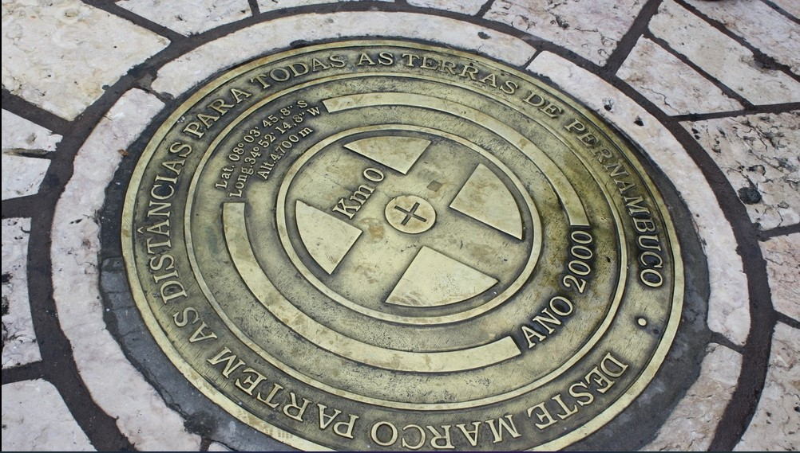
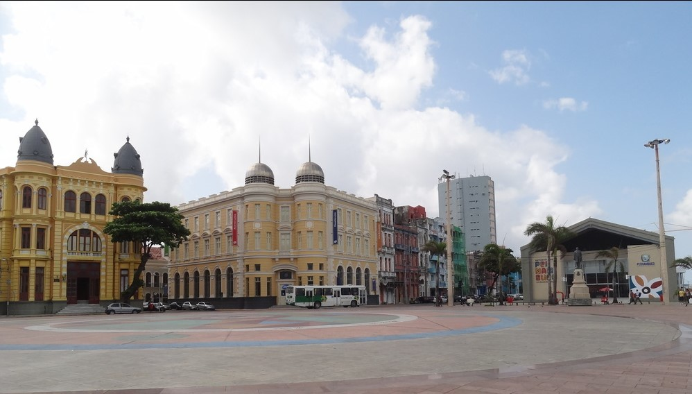
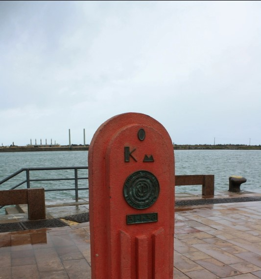

Marco Zero, um dos pontos turísticos mais famosos de Recife
O Marco Zero, na Praça Rio Branco, é conhecido como local de fundação da cidade do Recife e também como ponto inicial de contagem das distâncias calculadas a partir da cidade. O lugar é um dos pontos mais importantes na capital Pernambucana, pois é também uma região de forte movimento durante o Carnaval.
Aproveite sua visita para tirar uma foto com os dois marcos (o antigo e o novo), observar a vista para o Parque de Esculturas e os edifícios do Centro Cultural da Caixa e da Associação Comercial de Pernambuco. Se quiser fazer compras, vale a pena visitar o novo Mercado de Artesanato, que também fica no local.
Imagens do Marco Zero
  Praias do Recife
As praias do Recife, na verdade, são poucas e se resumem, basicamente, a Boa viagem e Praia do Pina. A orla recifense tem águas esverdeadas e muitos coqueiros, proporcionando um belo plano de fundo para quem quer curtir o mar. Com águas mornas, especialmente no verão, fica difícil resistir à tentação de um mergulho!
Boa Viagem é, sem dúvida, a praia mais famosa da cidade e se caracteriza por ter uma ótima estrutura para turistas e por formar piscinas naturais na maré baixa. A praia possui quiosques, barracas e um calçadão bem movimentado. Grande parte dos hotéis fica também em Boa Viagem, garantindo proximidade e facilidade para chegar à praia. Já o Pina, por ser uma região mais popular, não é tão frequentado pelos turistas como em Boa Viagem.
Ao falar das praias do Recife e adjacências, há um assunto polêmico: os temidos ataques de tubarões. Há placas pelas praias informando sobre o risco de ataque e alertando para que os banhistas não ultrapassem os arrecifes ou fiquem no mar no período de maré alta. Muitas pessoas da região dizem que os ataques acontecem, principalmente, a surfistas, que se distanciam muito da areia, mas, mesmo que você esteja em uma área rasa, é interessante seguir as recomendações das placas.
Parece estranho, mas a cidade do Recife em si não tem tantas praias, sendo muito frequente que os moradores da capital optem por deixá-la aos finais de semana para seguir rumo ao litoral norte ou sul de Pernambuco, onde se pode curtir as belezas de Calhetas, Carneiros ou, ainda, Porto de Galinhas.
Em Jaboatão dos Guararapes destaca-se a Praia de Piedade; em Olinda, as praias não são muito legais para banho, devido à qualidade da água, à quantidade de pedras e à agitação do mar - no entanto, Maria Farinha, um pouco mais ao norte, possui um belo cenário.
Praia da Boa Viagem
A Praia de Boa Viagem é a mais famosa do Recife e tem ótima estrutura para o turista. O lugar é bastante movimentado; quando o tempo está favorável, é comum ver banhistas e pessoas praticando exercícios físicos.
Essa praia possui águas mornas e esverdeadas, proporcionando não apenas um bom mergulho no mar como também um excelente plano de fundo aos olhos. A faixa de areia é longa em vários trechos da orla, onde é comum admirar coqueiros. No calçadão ficam quiosques que vendem bebidas e, nas areias, vendedores ambulantes e barracas (essas com preços mais altos que os dos quiosques).
Praia do Pina
A Praia do Pina é uma praia popular do Recife, com longa faixa de areia, coqueiros na orla e mar verdinho, típico da região. É um lugar bastante frequentado por moradores da cidade, com quiosques e barracas, mas pode deixar a desejar em relação à segurança.
Apesar de não ser a praia mais famosa do Recife, ela é uma continuação de Boa Viagem e pode ser uma boa opção para curtir o mar num dia de sol. Uma das boas vantagens do Recife é que as águas do mar têm temperatura agradável e não causam aquele choque térmico na hora do mergulho.
Praia de Piedade
A Praia de Piedade é uma continuação da Praia de Boa Viagem e fica na cidade de Jaboatão dos Guararapes, vizinha da capital pernambucana e parte da região metropolitana.
A praia mantém a coloração esverdeada típica dessa região, tem piscinas naturais e não é tão movimentada quanto a vizinha Boa Viagem, mas pode deixar a desejar em relação à limpeza.
Passeios No Recife
A verdade é que a cidade do Recife em si não tem tantos passeios. A grande maioria dos passeios vendidos pelas agências refere-se a praias do litoral norte e do litoral sul de Pernambuco. Quem está de carro não precisa recorrer a nenhuma agência e pode fazer vários desses passeios por conta própria. Vale a pena conhecer as praias próximas de carro e, assim, traçar seu próprio roteiro, dedicando o tempo que preferir às praias.
Na cidade, o passeio mais famoso é o de catamarã pelo Rio Capibaribe e suas pontes, em que turistas podem conhecer um pouco da parte antiga do Recife, edifícios seculares, pontes histórias. Esse passeio é bem legal e pode ser feito tanto durante o dia quanto à noite. Nossa recomendação é fazê-lo à noite e admirar a capital toda iluminada.
Quem quer explorar um pouco das praias pernambucanas não deve deixar de conhecer praias do litoral sul, como a baladíssima Porto de Galinhas, além de Carneiros e da pequena Calhetas. No norte do estado, a Ilha de Itamaracá é uma das opções mais procuradas.
Ilha de Calhetas
A Praia de Calhetas é uma das mais famosas do litoral sul de Pernambuco e se destaca pelo visual deslumbrante que se tem para o mar. É bem pequena, com pedras e área verde ao redor, dividida em duas partes: mais à esquerda, a praia tem menos ondas; à direita, mais ondas. É preciso certo cuidado ao entrar no mar, pois na área onde as ondas são mais fortes a água fica funda muito rápido. Além de curtir o mar, aproveite sua visita para tirar fotos ou descer na tirolesa. O mais famoso bar nessa praia é o Bar do Artur, que expõe diversas fotos dos famosos que já passaram por ali.
Passeio de Catamarã
Um dos passeios mais legais para fazer no Recife é o de catamarã - nele é possível conhecer vários pontos turísticos da cidade a partir de um ângulo diferente, além do mar e dos canais. Nesse passeio, que pode ser feito durante o dia ou à noite, os turistas têm a oportunidade de passar sob várias pontes, navegar pelos canais, admirar edifícios históricos e conhecer mais a fundo algumas curiosidades do Recife. É um passeio tranquilo e bem bonito, que rende ótimas fotos. Nossa dica é fazê-lo à noite e observar a cidade toda iluminada. É lindo! (R$ 38, por pessoa).
Praia de Carneiros
A Praia de Carneiros é considerada uma das mais famosas do Brasil e se destaca pelas águas claras e mornas, com arrecifes que formam piscinas naturais na maré baixa. É uma praia com muitos coqueiros e alguns estabelecimentos legais, como Bora Bora e Ariquindá. Além do visual belíssimo, a praia de Carneiros permanece rasa por um longo trecho de areia - por isso é possível ir caminhando até a área das piscinas e as crianças podem brincar no mar sem muito perigo.
Outros Pontos Turísticos do Antigo Recife
Quem gosta de centros urbanos com diversas opções de pontos turísticos tem grandes chances de se apaixonar pelo Recife, afinal há muito para ver e fazer. Para deixar a viagem ainda mais interessante, não dá para deixar Olinda fora do roteiro. A cidade vizinha do Recife possui um dos centros históricos mais famosos do país e igrejas que são verdadeiras obras-primas.
É legal que a capital pernambucana preserve muito de seu período colonial. A mistura do legado deixado pelas ocupações portuguesa e holandesa aliado às obras de revitalização da cidade tornam todo o conjunto de pontos turísticos bem atrativo para os turistas.
Reserve ao menos um dia para caminhar pelo Recife Antigo e visitar locais que estão na mesma área, como o Marco Zero - onde tem início a contagem oficial de distâncias -, o novo Mercado de Artesanato, a Rua do Bom Jesus e seus edifícios coloridos, a Embaixada dos Bonecos Gigantes, o Centro Cultural Judaico e a Torre Malakoff. Atravessando a Ponte Buarque de Macedo será fácil conhecer a Capela Dourada, possivelmente a igreja mais bonita do Recife, construída entre os séculos XVII e XVIII e toda coberta por ouro em seu interior. Tente também ir ao Forte das Cinco Pontas e à Casa da Cultura, onde funcionava uma prisão e hoje há lojinhas de artesanato.
Saindo um pouco da parte antiga do Recife, é imprescindível fazer uma visita à Praia de Boa Viagem, famosíssima na capital; à Oficina Brennand, cheia de obras de Francisco Brennand, pintor e escultor recifense; e ao Instituto Ricardo Brennand, um espaço com exposições interessantes para pessoas de todas as idades.
No Centro Histórico de Olinda, comece o passeio na Igreja do Carmo, datada de 1580, e, então, suba pela Rua São Francisco até alcançar o Convento de São Francisco, com muitos azulejos pintados. Continuando a subida, será fácil avistar o chamado Alto da Sé, onde ficam boas lojinhas, o Elevador Panorâmico e a Sé - a Catedral de Olinda, que tem uma das mais belas vistas da cidade. Na descida pela Ladeira da Misericórdia, vale a pena ir até o Mosteiro de São Bento, do século XVI. Fazendo esse caminho sugerido, subir as ladeiras ficará menos árduo.
Um lado positivo do turismo no Recife e em Olinda é que o valor cobrado para visitar a maioria dos pontos turísticos é simbólico.
As Torres Gêmeas
Localizada em Olinda, no edifício de 20 metros de altura, foi instalado um elevador panorâmico e o local foi transformado num mirante, que permite ao visitante uma vista de 360 graus para as duas cidades irmãs: Olinda e Recife. O espaço interior foi requalificado para exposições e outras atividades de apoio à visitação turística.
Foram construídas inicialmente em 2005, sendo terminadas quatro anos depois, após serem alvos de uma ação do Ministério Público devido a altura dos prédios, que de acordo com a MPF, afetaria o entorno do bairro o qual possui inúmeras construções tombadas pelo Instituto do Patrimônio Histórico e Artístico Nacional.[2] Apesar de tudo isso, os prédios conseguiram ser terminados.
Porto de Galinhas
Considerada em muitas ocasiões a praia mais bonita do Brasil, Porto de Galinhas está localizada no estado de Pernambuco, a cerca de 60 quilômetros da capital, Recife. A região possui deslumbrantes piscinas naturais de águas cristalinas e mornas, estuários, areia branca e vegetação endêmica. Foi, inclusive, eleita pela revista Viagem e Turismo como a Melhor Praia do Brasil por dez vezes seguidas.
Inicialmente, Porto de Galinhas era chamada de Porto Rico, devido à grande abundância de pau-brasil na região, e no século XIX, funcionou como um porto de desembarque clandestino de escravos, que chegavam escondidos embaixo de engradados de galinhas-d'angola. A chegada à costa era anunciada pela frase "tem galinha nova no porto", o que deu origem ao seu nome atual.